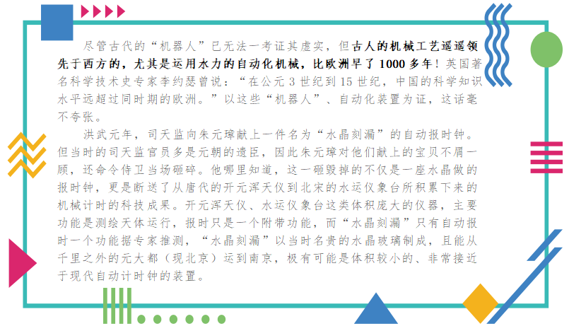

任务一 古代的智能观：哲学起源
【任务描述】
人类是地球上最可宝贵的“万物之灵”，高高雄踞于自然 界一切生物之上。人类依靠自己的力量不断去认识世界、改造世界，创造了人类所特有的科学文化，不断揭示着物质世界的奥秘，开辟着一个又一个新的认识领域和行动领域。人类靠什么去认识和改造客观世界，同时也改造和调节自己的主观活 动和复杂的社会生活，成为自然界发展的最高产物呢？靠的主要是不断发展着的人类自己的智能。
【任务实施】
1.1 西方的“智能”观
（1）休谟之问
休谟在《人性论》中提出的一个著名问题--休谟之问，即所谓从“是”能否推出“应该”，也即“事实”命题能否推导出“价值”命题。严格说来，休谟问题并非指事实与价值的关系问题，而是指事实命题与价值命题的关系问题，由于事实命题一般以“is”为系词，而价值命题一般以“ought”为系词，所以休谟问题又称“实然与应然问题”。
（2）符号逻辑
十七世纪德国数学家和哲学家莱布尼兹认为一切现实事件都可以通过物理符号将其逻辑化并进行推理，即‘万能符号’理论，这为数理逻辑发展奠定了基础，也是第一阶段人工智能思想的萌芽。
（3）语言和规则
维特根斯坦在《哲学研究》（Philosophical Investigation）中提出一种观点—“理解一个语句意味着理解一种语言”，即一个系统可以解析语词并将它们作为一个语句加以处理。但它不会将这个语句真正作为人类语言的一部分去理解，因为人类会利用语言游戏来表达不同的意图，人类对话是一种智能的过程，它通过操纵社会语境来实现说话人的意图。比维特根斯坦稍年轻一些的哲学家约翰·希尔勒（John Searle）遵循前者全新建立的以语言为中心的传统，他利用如今著名的“中文房间”（Chinese Room）思想实验证明，尽管人工智能能够遵循规则，但它无法认识规则。
1.2我国的“智能观”
（1）孟子的智能观
孟子写过“智者是非之心也”，是非之心就是“智”，你可以有意识，但不一定有智慧，意识是无关乎是非的，而智慧是要知道是非的，明白伦理的。
（2）王充的智能观
汉代王充在《论衡·实知》写到“故智能之士，不学不成，不问不知。”即使有智能的人，不学就没有成就，不请教别人就不会知道。
（4）荀子的智能观
荀子在《正名》说：“知之在人者谓之知”，这里的知就是咨询的意思。人有视觉、听觉、触觉、味觉和压力这些感知能力，我们会对身体所处的环境进行多通道、多模态的感知。“知有所合者谓之智”，而感知得到的不同通道的多种类型的大数据，在大脑中形成概念，形成对象，就产生了智慧。这种智慧的来源，是我们人对大数据一种综合的思考得到的一种结果。“人知在人者谓之能”，这里讲的是人的一些本能。例如，在路上你碰到前面一辆疾驶而来的汽车，你马上就能感知出来并认知出来这是一辆汽车，而且快速向你冲过来，如果你不做避让的话，就可能吾命不久矣。那这个时候人们就会开始趋利避害。人类有一些本能，可以做到对感知或者认知的结果快速地做出处理。“人有所合者谓之本正”，就可以被理解为是现在我们说的人工智能。就是要把所有从前端感知得到的数据，激发出智慧，再形成与之相关的行动或者决策。这样来看，整个人工智能脉络就已经被清晰得勾勒出来了。
1.3古代的人工智能技术
（1）能歌善舞的“机器人”
早在3000多年前的商周时期我国就出现了“机器人”，在《列子·汤问》中曾有记载，一个叫偃师的巧匠曾经为周穆王进贡过一个能歌善舞的木偶“机器人”。这个木偶不仅长相精致仿真，并且走路带风，行动自如。在偃师的操作下，它唱歌符合音律，尬舞起来丝毫没有僵硬感，“颔其颐，则歌合律；捧其手，则舞应节”。
（2）能记路程的“机器人”
记里鼓车又有“记里车”、“司里车”、“大章车”等别名。有关它的文字记载最早见于《晋书·舆服志》：“记里鼓车，驾四。形制如司南。其中有木人执槌向鼓，行一里则打一槌。”晋人崔豹所著的《古今注》中亦有类似的记述。据此可推断记里鼓车在晋或晋以前即已发明了。这个车上的木偶，每走过一里路都会敲一下鼓，行程达到十公里的时候则会敲一下镯能让车上的木偶动起来，车中有一套减速齿轮系，一直和车轮保持同时转动的趋势，最末的一只齿轮轴在行程一公里的时候刚好转完一周，车上的木偶因为受到凹轮的牵系，被绳索拉起的右臂击鼓一次，表明达到了一公里。
（3）能载货运输的“机器人”
《南齐书·祖冲之传》如是记载：“以诸葛亮有木牛流马，乃造一器，不因风水，施机自运，不劳人力。”这种“机器人”，载重量达到四百斤以上，每日可以达到“特行者数十里，群行三十里”，日夜不休。
（4）能飞行的“机器人”
飞行木鸢是一种会飞的机器鸟，用木材做成，内设机关，能在空中飞行。战国时代，鲁班（或称公输般、公输子）与墨子都曾制造木鹊或木鸢。《墨子》记载：“公输子削竹木以为鹊，成而飞之，三日不下。”《鸿书》中也记载：“公输般为木鸢，以窥宋城。”鲁班制作木鸢以侦查战争的情况，不正如同现代无人飞机侦查敌人情报相似。而后到汉代，张衡也创造了飞行木鸟，然而木雕的飞行引擎机械结构到如今仍一直是个未解谜团。
（5）能端茶倒酒的“机器人”
明末姜准《岐海琐谈集》中，记载一个叫黄子复的能人，他制作了个木人，可以给客人端茶送酒，还刻有木犬会咬住客人的衣服，挽留客人。文中说到：“山人黄子复，擅巧思，制为木偶，运动以机，无异生人。尝刻美女，手捧茶橐（茶壶）。自能移步供客。客举觞啜茗，即立以待；橐返于觞，即转其身，仍内向而入。又刻为小者，置诸席上，以次传觞。其行止上视瓯之举否，周旋向背，不须人力。其制一同于犬。刻木为犬，冒以真皮，口自开合，牙端攒聚小针。衔人衣裔，挂齿不脱，无异于真。”
（6）希腊古城的机器女仆
公元8世纪《荷马史诗》这本书中记载。希腊之神兼工匠之神赫菲斯托斯被赶出奥林匹克山之后，身边佣人空无一人，为了伺候他的衣食住行便制造了两个机器人女仆。（据说凡是被赶出奥林匹克山的众神，都是失去神力成为凡人），这个故事成为希腊文化的一部分。与此同时，拥有神奇能力的人形机器人概念便出现了。大约在800年后，古希腊工程师亚历山大得希罗，决定将这个梦想变成现实。他便设计出能够自行驱动上台的小机器，而这些小机器会完成一系列动作，比如点火、倒酒、走路等。而这或许是世上最早具有变革性的技术机器人了。

【任务拓展】
1、比较我国的智能观与西方的智能观，讨论他们之间的异同？